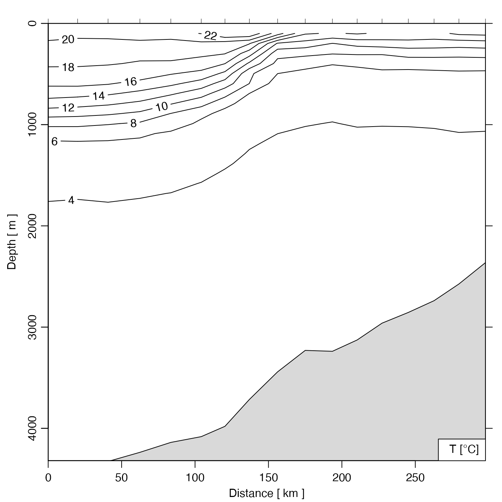

Grid a section, by interpolating to fixed pressure levels. The
"approx", "boxcar" and "lm" methods are described in the
documentation for ctdDecimate(), which is used to do this
processing.
sectionGrid(
section,
p,
method = "approx",
trim = TRUE,
debug = getOption("oceDebug"),
...
)Arguments
- section
A
sectionobject containing the section to be gridded.- p
Optional indication of the pressure levels to which interpolation should be done. If this is not supplied, the pressure levels will be calculated based on the typical spacing in the ctd profiles stored within
section. Ifp="levitus", then pressures will be set to be those of the Levitus atlas, given bystandardDepths(). Ifpis a single numerical value, it is taken as the number of subdivisions to use in a call toseq()that has range from 0 to the maximum pressure insection. Finally, if a vector numerical values is provided, perhaps. constructed withseq()orstandardDepths(5)(as in the examples), then it is used as is, after trimming any values that exceed the maximum pressure in the station data stored withinsection.- method
The method to use to decimate data within the stations; see
ctdDecimate(), which is used for the decimation.- trim
Logical value indicating whether to trim gridded pressures to the range of the data in
section.- debug
an integer specifying whether debugging information is to be printed during the processing. This is a general parameter that is used by many
ocefunctions. Generally, settingdebug=0turns off the printing, while higher values suggest that more information be printed. If one function calls another, it usually reduces the value ofdebugfirst, so that a user can often obtain deeper debugging by specifying higherdebugvalues.- ...
Optional arguments to be supplied to
ctdDecimate(), e.g.rulecontrols extrapolation beyond the observed pressure range, in the case wheremethodequals"approx".
Value
A section object that contains stations whose
pressure values match identically, and that has all flags set to NA.
Details
The default "approx" method is best for bottle data, the
"boxcar" is best for ctd data, and the "lm" method is probably
too slow to recommend for exploratory work, in which it is common to do trials
with a variety of "p" values.
The stations in the returned value have flags with names that match those
of the corresponding stations in the original section, but the values
of these flags are all set to NA. This recognizes that it makes
no sense to grid flag values, but that there is merit in initializing
a flag system, for possible use in later processing steps.
See also
Other things related to section data:
[[,section-method,
[[<-,section-method,
as.section(),
handleFlags,section-method,
initializeFlagScheme,section-method,
plot,section-method,
read.section(),
section-class,
sectionAddStation(),
sectionSmooth(),
sectionSort(),
section,
subset,section-method,
summary,section-method
Examples
# Gulf Stream
library(oce)
data(section)
GS <- subset(section, 109<=stationId&stationId<=129)
GSg <- sectionGrid(GS, p=seq(0, 5000, 100))
plot(GSg, map.xlim=c(-80,-60))

# Show effects of various depth schemes
par(mfrow=c(3, 1))
default <- sectionGrid(GS)
approxML <- sectionGrid(GS, method="approxML")
standardDepths5 <- sectionGrid(GS, p=standardDepths(5))
plot(default, which="temperature", ztype="image", ylim=c(200,0))
mtext("default sectionGrid()")
plot(approxML, which="temperature", ztype="image", ylim=c(200,0))
mtext("sectionGrid(..., method=\"approxML\")")
plot(standardDepths5, which="temperature", ztype="image", ylim=c(200,0))
mtext("sectionGrid(..., p=standardDepths(5))")